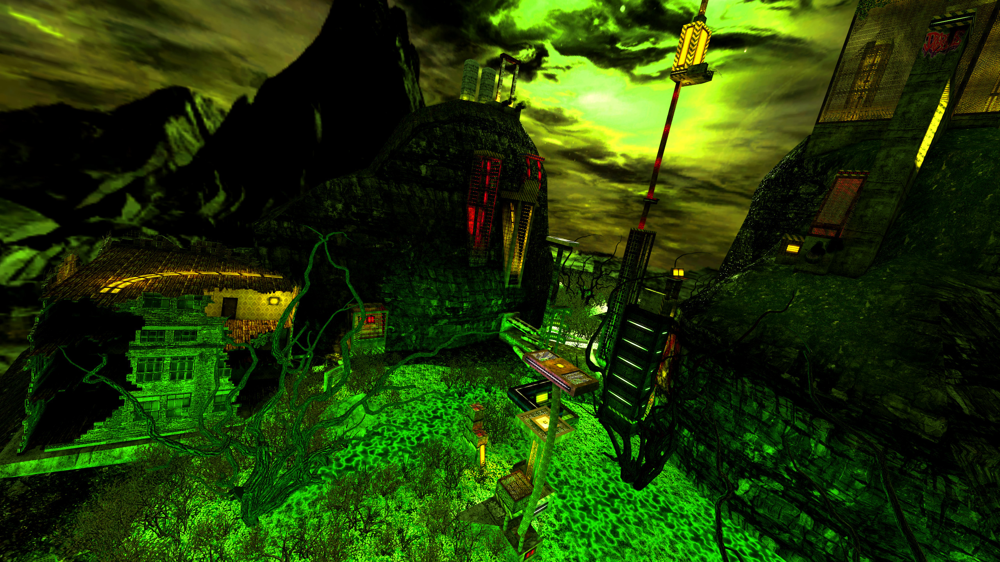
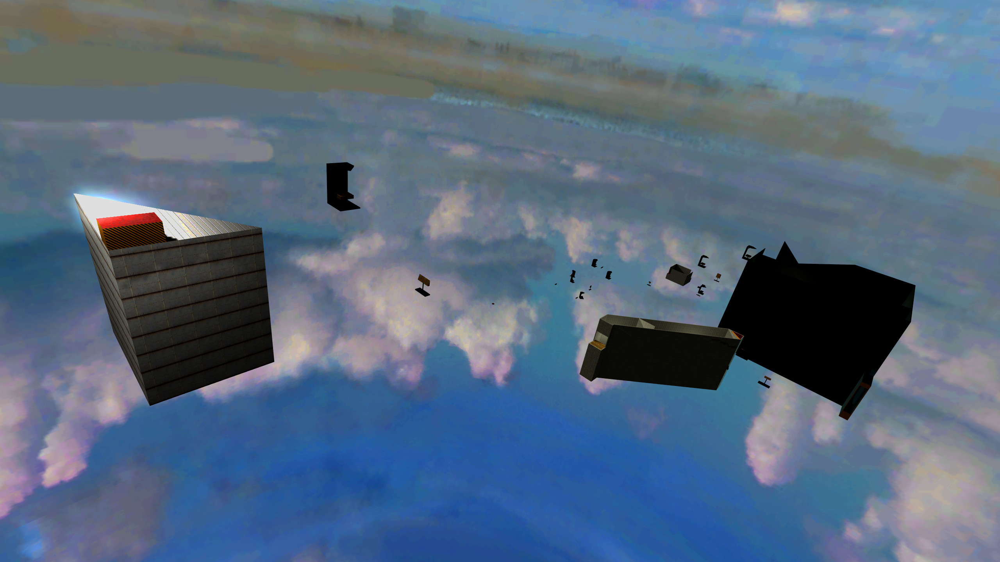
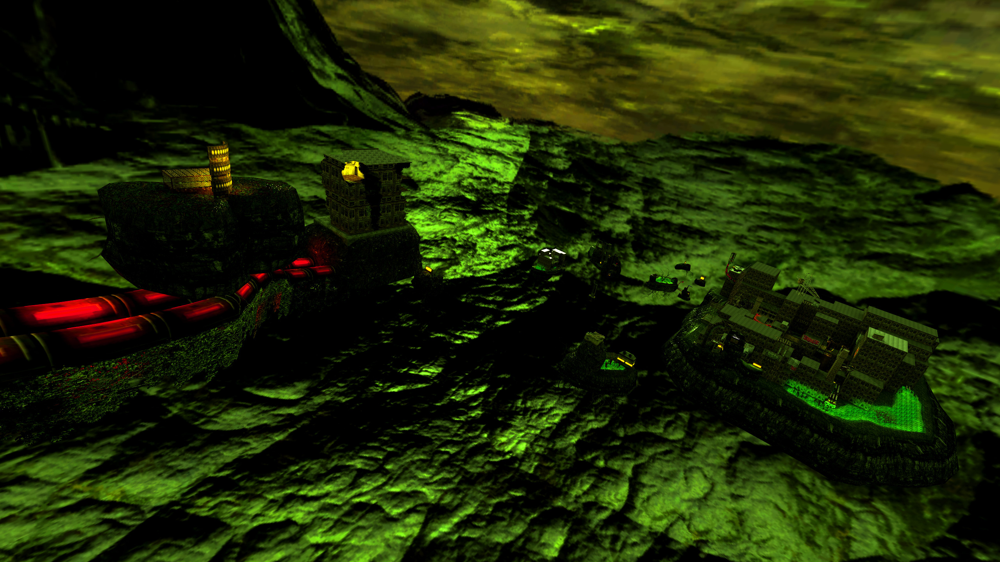
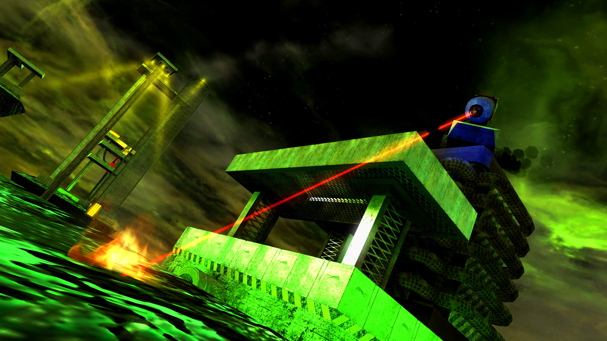
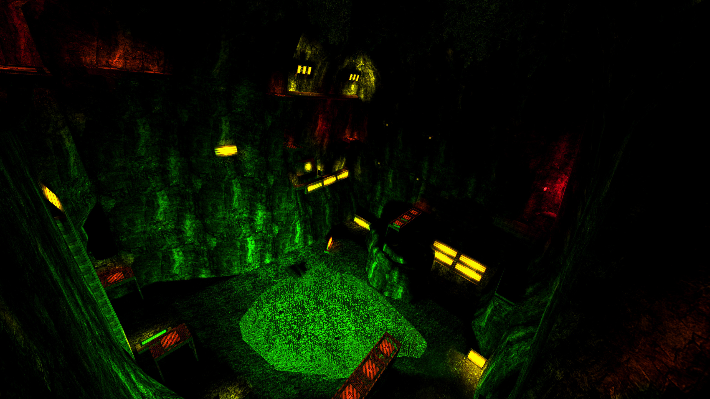

Overview
A radioactive industrial wasteland long ago abandoned by civilization. Journey through caves and toxic waste filled environments. Explore the ruins of a bygone generation.
Background
The origin of this map lies in Toxic’s first mapping creation, a map appropriately called mp_first. It was started at the end of 2018, with most of the bounces having been made, but unfortunately Toxic lost the most up-to-date version of the map, while migrating to a new PC. In the spring of 2020, I offered to use xoxor4d’s CoD4 client, which has a .map file exporter. This exporter can be used to retrieve the map's project files, and therefore enable the completion of the map. Toxic agreed and once we had the map files retrieved, Skazy offered to help us on making some design for the map, as at that point it was still very primitive, being a mostly floating platform map.
After Skazy joined forces with us, the scope of the project quickly grew grander. All three of us were constantly getting new ideas and getting excited about them. Most of the map was made shortly after this point, and it started to resemble close to what it looks like now only after a few months in the summer of 2020. Unfortunately, motivation for the project eventually died down sometime after the summer, and the map stayed mostly untouched for over half a year. In June of 2021, we got back together and aimed to finish the map. We went back to the ideas we started previously and refined them for a few months until the map was ready for release.
Visuals
Most of the effort for this map went into the design and atmosphere, with many of the key areas going through countless iterations. As the concept of what we wanted to create started to get clear, we started adding much more detail to the map. Effects and lighting played a big role into setting the overall feeling of the map. From the green glow illuminating from toxic waste pools to the faded yellow industrial lights make up most of the unique atmosphere. In terms of effects we added a lot of things. There is smoke coming off from pipes, flashing and blinking lights, fire burning in barrels, thrusters keeping platforms up in the air and even a fully functional laser. There are even some moving platforms and objects as well as a seemingly functional display monitor.
Gameplay
The map features three linear ways that are still very much based off from Toxic's original map from 2018. As the design evolved, some jumps and entire new sections were added. On Easy, you'll explore an extensive cave system, that eventually leads up to the surface. On Intermediate, you'll hop from island to island, jumping across and around many industrialized structures. On Hard, you'll venture into a full city and large overgrown areas.
